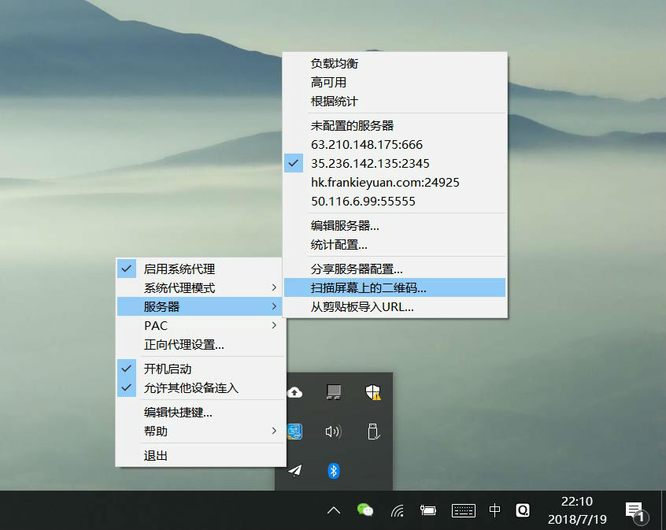
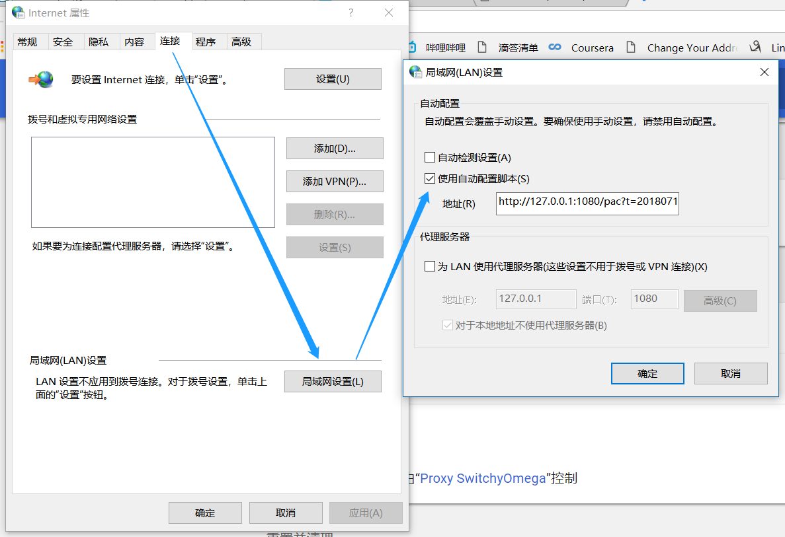

Windows配置教程
I. 准备工作
1. 使用系统浏览器打开该链接： https://github.com/shadowsocks/shadowsocks-windows/releases/download/4.0.10/Shadowsocks-4.0.10.zip 会自动开始下载，解压缩至桌面后双击打开。（如出现“Shadowsocks无法运行”的问题提示，请自行下载Microsoft .NET Framework 4.6.2） 2. 使用电脑版微信打开客服提供的二维码（配置码），将配置码显示在电脑屏幕上。II. 配置软件
1. 打开软件后，在屏幕右下角任务栏中找到飞机图标。在图标上右键→服务器→扫描屏幕上的二维码。扫码后服务器中会出现xxx.xxx.xxx.xxx的选项，勾选中即可。如图：
2. 勾选启动系统代理
III. 测试
1. 先使用常用的浏览器打开google.com测试，如连通即成功 2. 如不能访问，请使用IE浏览器进行测试IV. 排错
1. Shadowsocks无法运行 - 请自行安装Microsoft .NET Framework 4.6.2 2. 二维码无法识别 - 请使用微信打开（放大状态的）二维码显示在电脑主屏幕上 3. 配置后无法使用 - 请确保“服务器已勾选”并且“启动系统代理” 4. 浏览器无法访问 - 请使用Internet Explorer（IE）进行测试，如不成功请至浏览器设置中的局域网连接中如下配置
5. 仍然无法使用，请联系微信客服